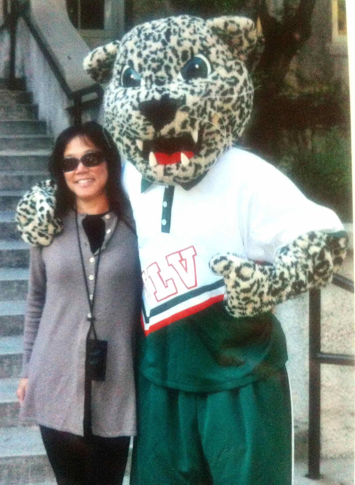
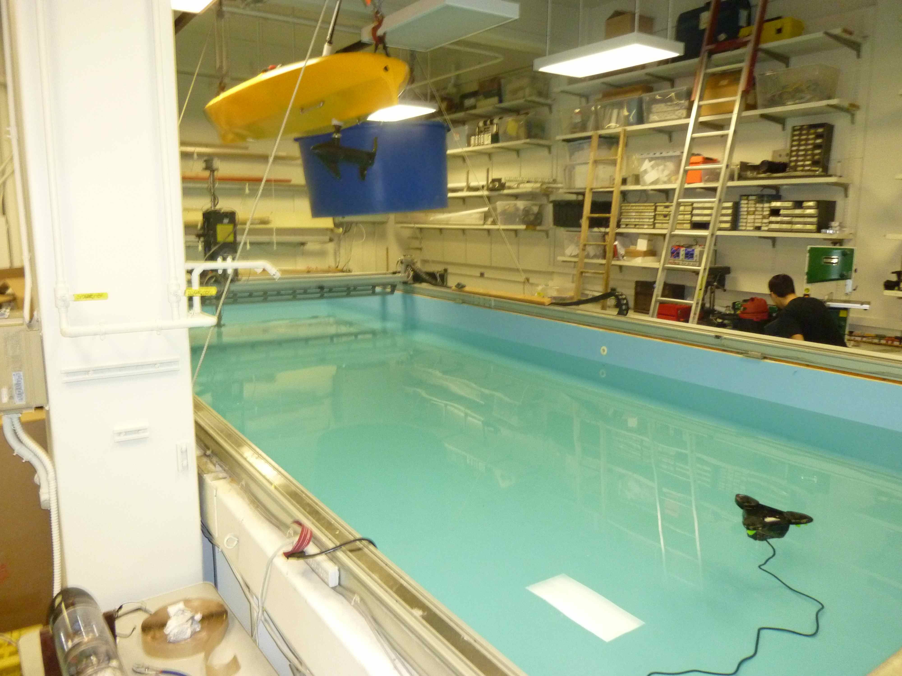
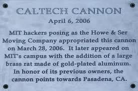

Laurie (on left)
at the University of LaVerne
About Laurie
Laurie's qualifications include:
- Master of Arts (M.A.) Degree in Educational Counseling specializing in College and University Counseling
- University of California Berkeley Graduate Certificate in College Admissions and Career Planning
- Degrees in both Psychology and Biology
A range of experience provides strong qualifications for working with high school and college students. In addition to working with students one-on-one in her independent practice, Laurie has years of experience assisting in school settings. She has worked with the College and Career Center at Scotts Valley High School as well as in support of the International Baccalaureate program, including assessments of IB English HL practice essays for the final IB exam. She has advised students on college and career planning in the French Baccalaureate program at a French immersion high school in San Francisco, working with students of very diverse backgrounds.
At the college level, Laurie has counseled undergraduate students at San Jose State University on career planning. In the academic advising department of Porter College of the University of California at Santa Cruz, she worked with undergraduate students exploring potential majors. Students included those searching for a major as well as many students in academic difficulty needing to find new pathways to success.
Laurie has extensive experience in university settings and the private sector that gives her a real-life understanding and perspective for guiding students. She has supervised student internship programs, managed federal research grants, worked on scientific research investigations with university faculty, and mentored students interested in science careers. She is very familiar with California public higher education administration and policy. She has worked as a scientist with a variety of local, state, and federal resource agencies and nonprofit organizations.

© Laurie Kiguchi
Autonomous underwater vehicle laboratory
at the Massachusetts Institute of Technology (MIT)
Approach to college planning:
Laurie's approach to the college search process is based on finding colleges that are good fits for students as individuals. Rather than living life for the sake of a college application, Laurie encourages students to live and develop their own lives, following their own interests and values. By guiding them to understand themselves and take advantage of opportunities to learn and grow, Laurie helps them to identify schools that will provide a range of options where they will be fulfilled, challenged, happy, and successful. Laurie extends this approach to career planning for college students and adults as well.
In keeping with this view, Laurie encourages students and families to help themselves in the college planning and application process. As explained under Services, she does not commit clients to packages or plans for a fixed number of meetings. While still providing overall guidance, she works on an hourly basis so clients can use her services to the extent they choose.
To develop a personal understanding of colleges and universities, Laurie visits many college campuses every year. Schools range across the U.S. and Canada, comprising small liberal arts schools, specialty art or engineering schools, and large research universities.
© Laurie Kiguchi
California Institute of Technology cannon at Cal Tech
Professional affiliations:
With a strong academic background, Laurie is keenly interested in issues affecting higher education and closely follows the pertinent research and literature. She is an active member of professional organizations for college admission counseling, academic advising, and career planning including:
- the National Association for College Admission Counseling (NACAC)
- the Western Association for College Admission Counseling (WACAC) (Bay Area Share, Learn, Connect Conference Co-Chair)
- the Higher Education Consultants Association (HECA) (National College Tours Committee Co-Chair)
- the National Academic Advising Association (NACADA)
- the National Career Development Association (NCDA).
Laurie practices in accordance with the NACAC Statement of Principles of Good Practice and HECA Standards and Ethics.
At the local level, Laurie is active in college counseling networks and educating the public. She is a:
- co-founder of the Monterey Bay College Counseling Consortium - a group of public and private high school counselors and independent advisors from Santa Cruz and Monterey counties
- founding member of the South Bay College Admissions Advisors working group (Santa Cruz and south SF Bay area counties)
- presenter on college planning issues at local high schools, Cabrillo College, and public libraries.

© Laurie Kiguchi
Cal Tech cannon at MIT
Laurie's experience working with clients
Laurie works with high school students, college students, and adults. She advises students on academic interests, identifying good-fit colleges, the college search process, financial aid, how to portray oneself on the application, and choosing among offers.
Laurie's clients represent a wide range of backgrounds, academic abilities, and talents - from engineers to equestrians, from top athletes to video game designers. Students come from high schools across
Santa Cruz County,
CA and beyond, with traditional U.S. high school curricula as well as the Advanced Placement (AP), International Baccalaureate (IB) and French Baccalaureate (French Bacc) programs. High schools include
San Lorenzo Valley, Scotts Valley, Santa Cruz, Georgiana Bruce Kirby, Pacific Collegiate, Harbor, Soquel, Aptos, Pajaro Valley, Pacific Coast Charter, Watsonville, and others outside Santa Cruz County. Laurie enjoys working with athletes and many of her students go on to play sports in college.
Laurie encourages students to learn to help themselves, providing ample guidance and suggestions while guiding them to build skills for learning and decision-making. The process is itself a learning experience, preparing students for the next stage.

Why the Cal Tech cannon was at MIT
Additional counseling background that sets Laurie apart
Laurie is especially interested in factors influencing college success. Her M.A. thesis focused on the importance of non-cognitive factors, characteristics that can play a role that is equally if not even more important than the academic record. Her experience working with college students at the University of California at Santa Cruz and San Jose State University is invaluable in understanding the opportunities and challenges that await students on the other side of college freshman orientation.
With an advanced degree in educational counseling, Laurie is certified to administer and interpret professional psychometric assessments. Laurie uses the professional-level Strong Interest Inventory and Myers-Briggs Type Indicator (MBTI) to help with college and career planning. In contrast to assessments available to the general public, the Strong and MBTI are built on rigorous psychometric testing and ongoing refinement. Laurie also offers the YouScience assessment, an in-depth evaluation of aptitudes, interests, and career opportunities that is specifically tailored to young adults.
Laurie is also a parent with children in college and beyond. She draws on her personal experience and understanding of both the opportunities and challenges facing high school and college students. She is sensitive to the family concerns and issues that can arise in the college and career planning processes.
Beyond college and career planning
Laurie is a scientist as well as a counselor, with her path to educational counseling arising in part from guiding students to science careers. Laurie's professional experience includes many years of working in natural environments and with engineers. As a professional biologist, her work has focused on studies related to native California flora and rare plant species including rare species assessments, botanical resource management, habitat restoration and biological impact assessment. Other experience includes marine biological studies, marine intertidal field assessments, and aquaculture of selected marine algal species. Laurie is also an environmental educator for K-12 and older students.
Laurie has a wide range of interests, which helps her to relate to students with a wide range of interests. In addition to her family and friends, some of her favorites are swimming, swimming in the ocean, science, kayaking, sailing, hiking, botanizing, mountain biking, yoga, reading, learning languages (over and over), traveling, and cats.
About the logo
The flower in the logo is Lewisia rediviva Pursh, commonly known as "bitterroot," a species native to California. The specific epithet "rediviva" is from the Latin "renovated, reborn, or restored to life" because of the way the plant dies back after flowering and then grows and blooms again the following year. Many thanks to photographer Daniel Mosquin of the Botanical Garden of the University of British Columbia for the use of his image.
Photo credit: Daniel Mosquin
What would you attempt to do if you knew you could not fail?
— Robert Schuller